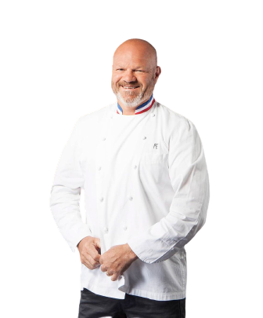

2009
Creation
Philippe Etchebest created the restaurant.Japanese cuisine has become increasingly popular in Paris over the past few decades, with a growing number of Japanese restaurants opening up throughout the city. Many of these restaurants offer traditional dishes such as sushi, sashimi, and tempura, as well as more modern interpretations of Japanese cuisine.

2014
Transition
After 5 years of direction, Philippe Etchebest leaves it and gives it to Cyril Lignac. Cyril Lignac brings some new plates and new Japanese specialities that attract many clients and give us the graduation for 3 stars restaurant.
2017
Recruitement
The director Cyril Lignac suggests to Alain Passard be his assistant and Alain accepted. It was a good proposition because it allowed the restaurant to go up to 4 stars.